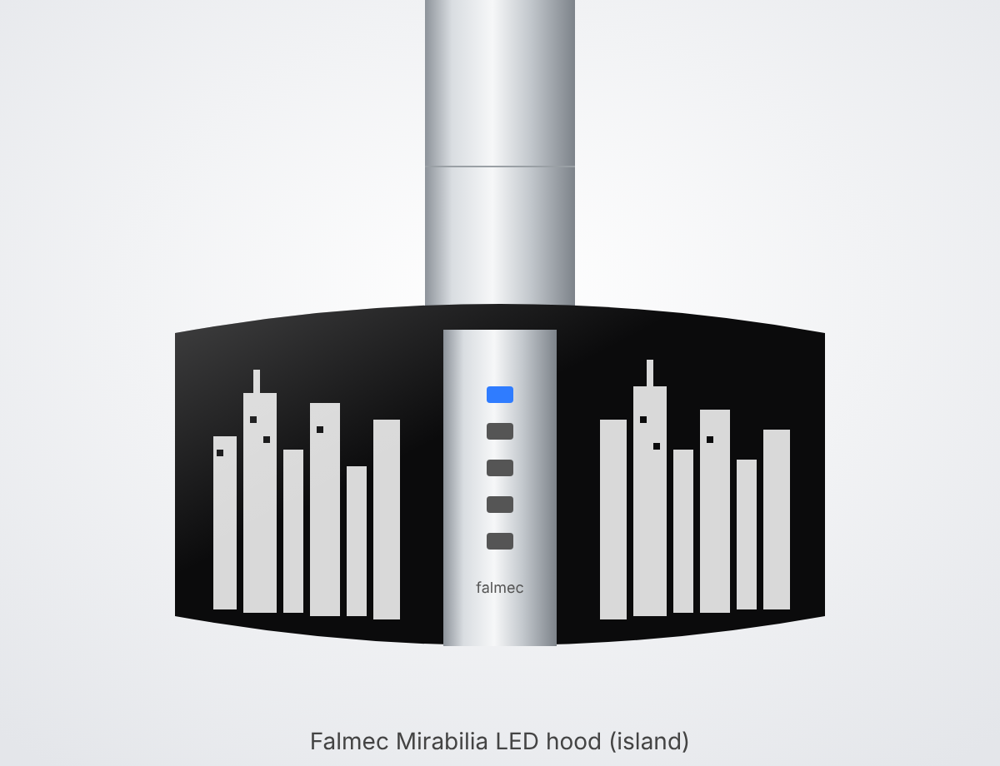

• Falmec Mirabilia — островная вытяжка, исполнение Round Island 65 (круглая, диаметр 65 см), стеклянные панели с принтом-силуэтом города (декор, вероятно, «New York»), дымоход из нержавейки.
• Код на шильдике: CJRI65.E50P2#ZZZI431F; тип BL; мощность 280 W; год выпуска 2016.
• Расшифровка по аналогии с кодами продавцов: CJRI65 — Mirabilia Round Isola 65; E50 — версия с мотором 800 м³/ч (у похожих моделей hausdorf.ru указывает «(800) ECP»); хвост #ZZZI…F — исполнение/декор. Официальной расшифровки в инструкции нет.
• Шильдик с данными (напряжение, мощность, код) находится внутри вытяжки — за металлическими жироулавливающими фильтрами.
• Инструкция Falmec общая для всей серии Mirabilia (Round Wall 67, Round Island 65/85, Square Wall 67/97, Square Island 85); декоры: Pharo, Manhattan, New York, Fenice, Moonlight, Penelope, Elektra, Groove, Maia, Platinum.
Управление
• Кнопки сверху вниз: ☀ свет · − · таймер · + · ⏻ питание мотора. Текущая скорость показывается светодиодами в кнопках.
• ⏻ (ON/OFF) — включает/выключает мотор. При включении вытяжка стартует на той скорости, на которой её выключили в прошлый раз.
• + — повышает скорость 1 → 2 → 3 → 4. Скорость 4 — интенсивный режим: светодиод «+» мигает, через несколько минут вытяжка сама переходит на скорость 3 (точное время в инструкции не указано; продавец пишет ~10–15 мин).
• − — понижает скорость 4 → 3 → 2 → 1.
• Какая скорость когда: 1 — поддерживать воздух чистым с минимальным расходом энергии; 2 — обычная готовка; 3 — сильные запахи и пар; 4 — быстро убрать сильный пар/запах.
• ☀ короткое нажатие — включить/выключить рабочий свет LED.
• ☀ удержание 3 с — «окружающий» (декоративный/фоновый) свет.
• Яркость: при ВЫКЛЮЧЕННОМ моторе кнопками + и − регулируется интенсивность света.
• Кнопка таймера (✱/часы, средняя): нажатие при работающем моторе — автоотключение через 15 минут, при этом мигает красный светодиод. Отмена — повторное нажатие таймера или кнопка ⏻ (красный светодиод гаснет).
• Сигнал засорения фильтров: красный светодиод горит ПОСТОЯННО (при выключенном моторе) — пора мыть металлические фильтры; срабатывает примерно через 30 часов работы.
• Сброс сигнала фильтров: после мойки удерживать кнопку 3 секунды — счётчик обнуляется. В инструкции символ кнопки в тексте не прочитался; по логике (красный светодиод — у кнопки таймера) это кнопка таймера. Если не сбрасывается — попробовать удержание других кнопок при выключенном моторе.
• Совет из инструкции: включать вытяжку минимум за 1 минуту до начала готовки и оставлять работать после, пока не уйдут пар и запахи.
• Отдельного сигнала для угольных фильтров в инструкции не указано.
Режим работы: наружу или рециркуляция
• Вытяжка бывает в двух вариантах: вытяжной (воздух уходит по трубе наружу/в вентканал) и фильтрующий (рециркуляция — воздух проходит угольные фильтры и возвращается в кухню).
• Как понять, что у нас: если от верха дымохода идёт труба (Ø150 мм) в вентканал/на улицу — режим «наружу». Если трубы нет, а воздух выходит через решётки/щели в верхней части дымохода, и внутри (за металлическими фильтрами) стоят угольные фильтры — рециркуляция.
• Также можно снять металлический фильтр и посмотреть: есть ли на моторе/за ним угольные кассеты.
• Обратный клапан: на моторах 800 м³/ч и мощнее стоит клапан против обратного потока наружного воздуха. В режиме рециркуляции клапан НЕ ставится (его снимают с патрубка мотора).
• Для режима «наружу»: труба не меньше диаметра патрубка, минимум изгибов и длины, на горизонтальных участках небольшой уклон вниз; в холодных зонах трубу утеплить. Нельзя подключать к дымоходам котлов, каминов и т. п.
Металлические жироулавливающие фильтры
• Как часто: каждые ~30 часов работы (загорится красный сигнал), а в разделе по уходу — не реже раза в месяц.
• Как снять: отключить питание; фильтры расположены снизу вытяжки — снимаются по схеме из инструкции по монтажу (обычно потянуть ручку/защёлку фильтра и вынуть). Подробный текст в инструкции не приведён — только рисунок.
• Мойка вручную: замочить примерно на 1 час в горячей (кипящей) воде с моющим средством, не сгибать, хорошо промыть, полностью высушить перед установкой.
• Посудомойка: можно, но на низкой температуре (не выше 55 °C); фильтр может потемнеть — на работу это не влияет.
• Не использовать едкие, кислотные или щелочные средства.
• Без металлических фильтров вытяжкой пользоваться нельзя.
• После мойки — сбросить сигнал фильтров (удержание 3 с, см. «Управление»).
Угольные фильтры (только при рециркуляции)
• Нужны только в фильтрующем варианте; при выводе воздуха наружу не ставятся.
• Замена каждые 3–4 месяца в зависимости от интенсивности использования. Мыть/регенерировать нельзя.
• Как менять: по схеме из инструкции по монтажу (в тексте шагов нет).
• Артикул в инструкции не указан. По данным продавцов: запчасть Falmec 103050091 (продавец hausdorf.ru указывает её для Mirabilia isola 65; аналог vhbw ссылается на 103050091 / 114163). Комплект рециркуляции к островной Mirabilia 65 у продавца — KACL.261. Перед заказом сверить с дилером по коду CJRI65.E50P2#ZZZI431F.
Освещение LED
• Вытяжка с высокоэффективными LED-спотами 12 V.
• Замена спота: обесточить, дать остыть и заменить по рисунку в инструкции (текстового описания шагов нет).
• Тип/артикул светодиода в инструкции не указан — снять старый спот и подобрать такой же (12 V) у дилера Falmec.
• У старых версий Mirabilia (до ~2013) стояли галогенки 20 W — для нашей LED-версии не подходят.
Чистка стекла и нержавейки
• Перед чисткой — выключить из розетки или общим выключателем; не чистить, пока детали горячие.
• Снаружи чистить не реже раза в 15 дней.
• Матовая нержавейка: Falmec рекомендует салфетки «Magic Steel»; иначе — влажная тряпка с мягким жидким средством или денатуратом; вытирать мягкой тканью.
• Стекло (панели с принтом): только специальные неабразивные, неедкие средства для стекла и мягкая ткань.
• Кнопки и подсветку протирать почти сухой тряпкой — влага не должна попасть в электронику.
• Запрещено: абразивы, кислотные/едкие средства, жёсткие губки.
• Внутри: электрические части и мотор не мыть жидкостями и растворителями.
Неисправности
• Специальной таблицы неисправностей в инструкции нет. Ниже — что из неё следует:
• Горит постоянный красный светодиод → помыть металлические фильтры и сбросить счётчик удержанием кнопки 3 с.
• Скорость 4 сама упала на 3 → это нормально, интенсивный режим ограничен по времени.
• Вытяжка сама выключилась через 15 мин → был включён таймер (мигал красный).
• Свет не регулируется + / − → регулировка работает только при выключенном моторе.
• Плохо тянет / остаются запахи → помыть металлические фильтры; при рециркуляции заменить угольные; проверить, не снят ли/не заклинил обратный клапан (в режиме «наружу»).
• Повреждён кабель или корпус → не пользоваться, обесточить, вызвать сервис. Самостоятельно не ремонтировать — только дилер/авторизованный сервис Falmec.
Безопасность
• Не оставлять под вытяжкой открытый огонь без присмотра, не фламбировать.
• Следить за фритюром — перегретое масло может загореться.
• Минимальное расстояние от варочной панели: газ — 600 мм (в тексте также «как правило 65 см»), индукция/электро — 520 мм; если инструкция газовой плиты требует больше — соблюдать её.
• Общий вес предметов на вытяжке — не более 1,5 кг.
• Не подключать к дымоходам от котлов, каминов и т. п.; при одновременной работе с неэлектрическими приборами (газ, камин) нужен приток воздуха — для Германии норма разрежения не более 4 Па.
• Все работы по уходу — только при отключённом питании. Доступные части могут нагреваться при готовке.
• Не устанавливать на улице.
Технические данные
• Модель: Mirabilia Round Island 65, вес 31 кг (по инструкции).
• Мощность: 280 W (шильдик); напряжение — см. шильдик внутри (в инструкции не указано).
• Скорости: 4 (4-я — интенсивная, временная). Таймер: 15 мин. Сигнал фильтров: ~30 ч.
• Производительность: в инструкции не указано; у продавца для аналогичных Mirabilia isola 65 — до 800 м³/ч, шум 45–64 дБ (не официальные данные Falmec).
• Патрубок отвода: Ø150 мм (на рисунках также Ø160 мм для бокового выхода островной версии).
• Освещение: LED-споты 12 V.
• Сделано в Италии.
Запчасти и артикулы
• Угольный фильтр: Falmec 103050091 (по данным продавцов, не из инструкции); аналоги vhbw с совместимостью 103050091 / 114163.
• Комплект рециркуляции для Mirabilia isola 65: KACL.261 (по коду комплектации у hausdorf.ru).
• Металлические жироулавливающие фильтры: артикул в инструкции не указан.
• LED-спот: артикул в инструкции не указан.
• Для заказа называть дилеру полный код CJRI65.E50P2#ZZZI431F и тип BL.
Пересказ официальной инструкции для домашнего справочника. Источник: https://falmec-catprod1.falmec.com/files/5084.pdf ; https://www.manualslib.fr/manual/257472/Falmec-Mirabilia.html ; https://www.hausdorf.ru/catalog/vytyazhki/falmec/vytyazhka-falmec-mirabilia-isola-65-venezia-vetro-800-ecp.html
Falmec Mirabilia LED cooker hood (island)
Round island cooker hood with LED lighting · 📍 Where: Open box 007

Model and markings
• Falmec Mirabilia — island cooker hood, Round Island 65 version (round, 65 cm diameter), glass panels printed with a city skyline (décor probably “New York”), stainless steel chimney.
• Code on the rating plate: CJRI65.E50P2#ZZZI431F; type BL; power 280 W; year of manufacture 2016.
• Decoding by analogy with retailers’ codes: CJRI65 — Mirabilia Round Isola 65; E50 — version with an 800 m³/h motor (for similar models hausdorf.ru gives “(800) ECP”); the tail #ZZZI…F — version/décor. The manual gives no official decoding.
• The rating plate with the data (voltage, power, code) is inside the hood — behind the metal grease filters.
• The Falmec manual is shared by the whole Mirabilia series (Round Wall 67, Round Island 65/85, Square Wall 67/97, Square Island 85); décors: Pharo, Manhattan, New York, Fenice, Moonlight, Penelope, Elektra, Groove, Maia, Platinum.
Controls
• Buttons from top to bottom: ☀ light · − · timer · + · ⏻ motor power. The current speed is shown by LEDs in the buttons.
• ⏻ (ON/OFF) — switches the motor on/off. When switched on, the hood starts at the speed at which it was last switched off.
• + — increases the speed 1 → 2 → 3 → 4. Speed 4 is the intensive mode: the “+” LED flashes, and after a few minutes the hood drops back to speed 3 by itself (the exact time is not given in the manual; the retailer says ~10–15 min).
• − — decreases the speed 4 → 3 → 2 → 1.
• Which speed when: 1 — keeping the air clean with minimal energy use; 2 — normal cooking; 3 — strong odours and steam; 4 — quickly clearing heavy steam/odour.
• ☀ short press — switch the LED work light on/off.
• ☀ hold for 3 s — “ambient” (decorative/background) light.
• Brightness: with the motor OFF, the + and − buttons adjust the light intensity.
• Timer button (✱/clock, middle): pressing it while the motor is running switches the hood off automatically after 15 minutes; a red LED flashes meanwhile. To cancel, press the timer again or the ⏻ button (the red LED goes out).
• Filter clogging signal: the red LED is lit CONTINUOUSLY (with the motor off) — time to wash the metal filters; it comes on after about 30 hours of operation.
• Resetting the filter signal: after washing, hold the button for 3 seconds — the counter is reset. The button symbol did not come through in the manual text; logically (the red LED is on the timer button) it is the timer button. If it does not reset, try holding the other buttons with the motor off.
• Tip from the manual: switch the hood on at least 1 minute before you start cooking and leave it running afterwards until the steam and odours are gone.
• The manual does not mention a separate signal for the charcoal filters.
Operating mode: ducted or recirculating
• The hood comes in two versions: ducted (air goes out through a duct to the outside/into a ventilation shaft) and filtering (recirculation — air passes through charcoal filters and returns to the kitchen).
• How to tell which one we have: if a duct (Ø150 mm) runs from the top of the chimney into a ventilation shaft/outside — ducted mode. If there is no duct, air comes out through grilles/slots in the upper part of the chimney, and there are charcoal filters inside (behind the metal filters) — recirculation.
• You can also remove a metal filter and look whether there are charcoal cassettes on/behind the motor.
• Non-return valve: motors of 800 m³/h and above have a valve preventing outside air from flowing back in. In recirculation mode the valve is NOT fitted (it is removed from the motor outlet).
• For ducted mode: duct no smaller than the outlet diameter, as few bends and as short as possible, a slight downward slope on horizontal runs; insulate the duct in cold areas. Do not connect to flues of boilers, fireplaces, etc.
Metal grease filters
• How often: every ~30 hours of operation (the red signal comes on), and according to the care section at least once a month.
• How to remove: switch off the power; the filters are on the underside of the hood — they are removed as shown in the installation instructions (usually pull the filter handle/latch and take it out). The manual gives no detailed text — only a figure.
• Washing by hand: soak for about 1 hour in hot (boiling) water with detergent, do not bend, rinse well, dry completely before refitting.
• Dishwasher: allowed, but at a low temperature (no higher than 55 °C); the filter may darken — this does not affect its function.
• Do not use corrosive, acidic or alkaline products.
• Never use the hood without the metal filters.
• After washing — reset the filter signal (hold for 3 s, see “Controls”).
Charcoal filters (recirculation only)
• Needed only in the filtering version; not fitted when air is ducted outside.
• Replace every 3–4 months depending on how intensively the hood is used. They cannot be washed/regenerated.
• How to replace: as shown in the installation instructions (the text has no steps).
• The part number is not given in the manual. According to retailers: Falmec spare part 103050091 (hausdorf.ru lists it for the Mirabilia isola 65; the vhbw equivalent refers to 103050091 / 114163). The retailer’s recirculation kit for the Mirabilia 65 island is KACL.261. Check with a dealer against code CJRI65.E50P2#ZZZI431F before ordering.
LED lighting
• The hood has high-efficiency 12 V LED spotlights.
• Replacing a spotlight: disconnect the power, let it cool and replace as shown in the manual’s figure (no text description of the steps).
• The LED type/part number is not given in the manual — remove the old spotlight and get an identical one (12 V) from a Falmec dealer.
• Older Mirabilia versions (before ~2013) had 20 W halogen lamps — these do not fit our LED version.
Cleaning the glass and stainless steel
• Before cleaning — unplug or switch off at the main switch; do not clean while parts are hot.
• Clean the outside at least once every 15 days.
• Brushed stainless steel: Falmec recommends “Magic Steel” wipes; otherwise — a damp cloth with a mild liquid detergent or denatured alcohol; wipe dry with a soft cloth.
• Glass (printed panels): only special non-abrasive, non-corrosive glass cleaners and a soft cloth.
• Wipe the buttons and lighting with an almost dry cloth — moisture must not get into the electronics.
• Forbidden: abrasives, acidic/corrosive products, hard sponges.
• Inside: do not wash the electrical parts and motor with liquids or solvents.
Troubleshooting
• The manual has no dedicated troubleshooting table. Below is what follows from it:
• Red LED lit continuously → wash the metal filters and reset the counter by holding the button for 3 s.
• Speed 4 dropped to 3 by itself → this is normal, the intensive mode is time-limited.
• The hood switched itself off after 15 min → the timer was on (the red LED was flashing).
• The light cannot be adjusted with + / − → adjustment works only with the motor off.
• Weak extraction / odours remain → wash the metal filters; with recirculation replace the charcoal filters; check that the non-return valve has not been removed or got stuck (in ducted mode).
• Damaged cable or housing → do not use, disconnect the power, call a service technician. Do not repair it yourself — only a Falmec dealer/authorised service.
Safety
• Do not leave an open flame unattended under the hood; do not flambé.
• Keep an eye on deep frying — overheated oil can catch fire.
• Minimum distance from the hob: gas — 600 mm (the text also says “as a rule 65 cm”), induction/electric — 520 mm; if the gas hob’s instructions require more, follow them.
• Total weight of objects placed on the hood — no more than 1.5 kg.
• Do not connect to flues from boilers, fireplaces, etc.; when used at the same time as non-electric appliances (gas, fireplace), a supply of fresh air is needed — in Germany the negative pressure limit is no more than 4 Pa.
• All maintenance only with the power disconnected. Accessible parts can become hot during cooking.
• Do not install outdoors.
Technical data
• Model: Mirabilia Round Island 65, weight 31 kg (according to the manual).
• Power: 280 W (rating plate); voltage — see the rating plate inside (not stated in the manual).
• Speeds: 4 (the 4th is intensive, temporary). Timer: 15 min. Filter signal: ~30 h.
• Extraction rate: not stated in the manual; the retailer gives up to 800 m³/h for similar Mirabilia isola 65 models, noise 45–64 dB (not official Falmec data).
• Outlet: Ø150 mm (the figures also show Ø160 mm for the side outlet of the island version).
• Lighting: 12 V LED spotlights.
• Made in Italy.
Spare parts and part numbers
• Charcoal filter: Falmec 103050091 (according to retailers, not from the manual); vhbw equivalents compatible with 103050091 / 114163.
• Recirculation kit for the Mirabilia isola 65: KACL.261 (based on the configuration code at hausdorf.ru).
• Metal grease filters: part number not given in the manual.
• LED spotlight: part number not given in the manual.
• When ordering, give the dealer the full code CJRI65.E50P2#ZZZI431F and type BL.
Summary of the official manual for the home reference. Source: https://falmec-catprod1.falmec.com/files/5084.pdf ; https://www.manualslib.fr/manual/257472/Falmec-Mirabilia.html ; https://www.hausdorf.ru/catalog/vytyazhki/falmec/vytyazhka-falmec-mirabilia-isola-65-venezia-vetro-800-ecp.html
Falmec Mirabilia LED -liesituuletin (saarekemalli)
• Falmec Mirabilia — saarekeliesituuletin, Round Island 65 -versio (pyöreä, halkaisija 65 cm), lasipaneelit, joissa on painettu kaupungin siluetti (kuosi todennäköisesti ”New York”), ruostumattomasta teräksestä valmistettu hormi.
• Arvokilven koodi: CJRI65.E50P2#ZZZI431F; tyyppi BL; teho 280 W; valmistusvuosi 2016.
• Koodin tulkinta myyjien koodien perusteella: CJRI65 — Mirabilia Round Isola 65; E50 — versio, jossa on 800 m³/h moottori (vastaavista malleista hausdorf.ru ilmoittaa ”(800) ECP”); loppuosa #ZZZI…F — versio/kuosi. Käyttöohjeessa ei ole virallista tulkintaa.
• Arvokilpi tietoineen (jännite, teho, koodi) on liesituulettimen sisällä — metallisten rasvasuodattimien takana.
• Falmecin käyttöohje on yhteinen koko Mirabilia-sarjalle (Round Wall 67, Round Island 65/85, Square Wall 67/97, Square Island 85); kuosit: Pharo, Manhattan, New York, Fenice, Moonlight, Penelope, Elektra, Groove, Maia, Platinum.
Käyttö
• Painikkeet ylhäältä alas: ☀ valo · − · ajastin · + · ⏻ moottorin virta. Nykyinen nopeus näkyy painikkeiden merkkivaloista.
• ⏻ (ON/OFF) — käynnistää/pysäyttää moottorin. Käynnistettäessä liesituuletin alkaa sillä nopeudella, jolla se viimeksi sammutettiin.
• + — nostaa nopeutta 1 → 2 → 3 → 4. Nopeus 4 on tehotila: ”+”-merkkivalo vilkkuu, ja muutaman minuutin kuluttua liesituuletin siirtyy itsestään nopeudelle 3 (tarkkaa aikaa ohjeessa ei kerrota; myyjän mukaan n. 10–15 min).
• − — laskee nopeutta 4 → 3 → 2 → 1.
• Mikä nopeus milloinkin: 1 — ilman pitäminen raikkaana mahdollisimman pienellä energiankulutuksella; 2 — tavallinen ruoanlaitto; 3 — voimakkaat hajut ja höyry; 4 — runsaan höyryn/hajun nopea poisto.
• ☀ lyhyt painallus — LED-työvalo päälle/pois.
• ☀ pito 3 s — ”tunnelmavalo” (koriste-/taustavalo).
• Kirkkaus: kun moottori on POIS PÄÄLTÄ, valon voimakkuutta säädetään + ja − -painikkeilla.
• Ajastinpainike (✱/kello, keskimmäinen): painallus moottorin käydessä — automaattinen sammutus 15 minuutin kuluttua, jolloin punainen merkkivalo vilkkuu. Peruutus — paina ajastinta uudelleen tai ⏻-painiketta (punainen merkkivalo sammuu).
• Suodattimien tukkeutumisilmoitus: punainen merkkivalo palaa JATKUVASTI (moottorin ollessa pois päältä) — metallisuodattimet on aika pestä; ilmoitus tulee noin 30 käyttötunnin jälkeen.
• Suodatinilmoituksen nollaus: pesun jälkeen pidä painiketta painettuna 3 sekuntia — laskuri nollautuu. Painikkeen symboli ei näkynyt ohjeen tekstissä; logiikan mukaan (punainen merkkivalo on ajastinpainikkeessa) kyseessä on ajastinpainike. Jos nollaus ei onnistu, kokeile pitää muita painikkeita painettuna moottorin ollessa pois päältä.
• Ohjeen vinkki: käynnistä liesituuletin vähintään 1 minuutti ennen ruoanlaiton aloittamista ja anna sen käydä sen jälkeen, kunnes höyry ja hajut ovat poistuneet.
• Ohjeessa ei mainita erillistä ilmoitusta hiilisuodattimille.
Toimintatapa: ulospuhallus vai kierrätys
• Liesituulettimesta on kaksi versiota: poistoilmaversio (ilma johdetaan putkea pitkin ulos/ilmanvaihtokanavaan) ja suodattava versio (kierrätys — ilma kulkee hiilisuodattimien läpi ja palaa keittiöön).
• Miten tunnistaa, kumpi meillä on: jos hormin yläpäästä lähtee putki (Ø150 mm) ilmanvaihtokanavaan/ulos — ulospuhallus. Jos putkea ei ole, vaan ilma tulee ulos hormin yläosan ritilöistä/raoista, ja sisällä (metallisuodattimien takana) on hiilisuodattimet — kierrätys.
• Voit myös irrottaa metallisuodattimen ja katsoa, onko moottorissa/sen takana hiilisuodatinkasetteja.
• Takaiskuventtiili: 800 m³/h ja sitä tehokkaammissa moottoreissa on venttiili, joka estää ulkoilman takaisinvirtauksen. Kierrätyskäytössä venttiiliä EI asenneta (se irrotetaan moottorin liitäntäkaulasta).
• Ulospuhallusta varten: putki vähintään liitäntäkaulan kokoinen, mahdollisimman vähän mutkia ja mahdollisimman lyhyt, vaakaosuuksilla pieni kallistus alaspäin; kylmissä tiloissa putki eristetään. Ei saa liittää kattiloiden, takkojen tms. savuhormeihin.
Metalliset rasvasuodattimet
• Kuinka usein: noin 30 käyttötunnin välein (punainen ilmoitus syttyy), ja hoito-osion mukaan vähintään kerran kuukaudessa.
• Irrotus: katkaise virta; suodattimet ovat liesituulettimen alapuolella — ne irrotetaan asennusohjeen kuvan mukaisesti (yleensä vedetään suodattimen kahvasta/salvasta ja otetaan pois). Ohjeessa ei ole yksityiskohtaista tekstiä — vain kuva.
• Käsinpesu: liota noin 1 tunti kuumassa (kiehuvassa) vedessä pesuaineen kanssa, älä taivuta, huuhtele hyvin, kuivaa kokonaan ennen asentamista.
• Astianpesukone: sallittu, mutta matalassa lämpötilassa (enintään 55 °C); suodatin voi tummua — se ei vaikuta toimintaan.
• Älä käytä syövyttäviä, happamia tai emäksisiä aineita.
• Liesituuletinta ei saa käyttää ilman metallisuodattimia.
• Pesun jälkeen — nollaa suodatinilmoitus (pito 3 s, katso ”Käyttö”).
Hiilisuodattimet (vain kierrätyskäytössä)
• Tarvitaan vain suodattavassa versiossa; ulospuhalluksessa niitä ei asenneta.
• Vaihto 3–4 kuukauden välein käytön määrästä riippuen. Niitä ei voi pestä/elvyttää.
• Vaihto: asennusohjeen kuvan mukaisesti (tekstissä ei ole vaiheita).
• Tuotenumeroa ei ole ohjeessa. Myyjien tietojen mukaan: Falmec-varaosa 103050091 (hausdorf.ru ilmoittaa sen Mirabilia isola 65 -mallille; vhbw:n vastine viittaa numeroihin 103050091 / 114163). Myyjän kierrätyssarja Mirabilia 65 -saarekemalliin on KACL.261. Tarkista jälleenmyyjältä koodilla CJRI65.E50P2#ZZZI431F ennen tilaamista.
LED-valaistus
• Liesituulettimessa on erittäin tehokkaat 12 V:n LED-kohdevalot.
• Kohdevalon vaihto: katkaise virta, anna jäähtyä ja vaihda ohjeen kuvan mukaisesti (vaiheista ei ole tekstikuvausta).
• LEDin tyyppiä/tuotenumeroa ei ole ohjeessa — irrota vanha kohdevalo ja hanki samanlainen (12 V) Falmecin jälleenmyyjältä.
• Vanhemmissa Mirabilia-versioissa (ennen n. vuotta 2013) oli 20 W:n halogeenilamput — ne eivät sovi meidän LED-versioomme.
Lasin ja ruostumattoman teräksen puhdistus
• Ennen puhdistusta — irrota pistoke tai katkaise virta pääkytkimestä; älä puhdista osien ollessa kuumia.
• Puhdista ulkopinnat vähintään 15 päivän välein.
• Harjattu ruostumaton teräs: Falmec suosittelee ”Magic Steel” -puhdistusliinoja; muuten — kostea liina ja mieto nestemäinen pesuaine tai denaturoitu sprii; kuivaa pehmeällä liinalla.
• Lasi (painetut paneelit): vain erityiset hankaamattomat, syövyttämättömät lasinpuhdistusaineet ja pehmeä liina.
• Pyyhi painikkeet ja valaistus lähes kuivalla liinalla — kosteutta ei saa päästä elektroniikkaan.
• Kielletty: hankaavat aineet, happamat/syövyttävät aineet, kovat sienet.
• Sisäpuoli: sähköosia ja moottoria ei saa pestä nesteillä eikä liuottimilla.
Vianetsintä
• Ohjeessa ei ole erillistä vianetsintätaulukkoa. Alla on, mitä siitä voi päätellä:
• Punainen merkkivalo palaa jatkuvasti → pese metallisuodattimet ja nollaa laskuri pitämällä painiketta painettuna 3 s.
• Nopeus 4 laski itsestään nopeudelle 3 → tämä on normaalia, tehotila on aikarajoitettu.
• Liesituuletin sammui itsestään 15 minuutin kuluttua → ajastin oli päällä (punainen vilkkui).
• Valoa ei voi säätää + / − -painikkeilla → säätö toimii vain moottorin ollessa pois päältä.
• Imee huonosti / hajut jäävät → pese metallisuodattimet; kierrätyskäytössä vaihda hiilisuodattimet; tarkista, ettei takaiskuventtiiliä ole irrotettu tai ettei se ole juuttunut (ulospuhalluksessa).
• Johto tai runko vaurioitunut → älä käytä, katkaise virta, kutsu huolto. Älä korjaa itse — vain Falmecin jälleenmyyjä/valtuutettu huolto.
Turvallisuus
• Älä jätä avotulta valvomatta liesituulettimen alle, älä liekitä ruokia.
• Valvo friteerausta — ylikuumentunut öljy voi syttyä palamaan.
• Vähimmäisetäisyys keittotasosta: kaasu — 600 mm (tekstissä myös ”yleensä 65 cm”), induktio/sähkö — 520 mm; jos kaasulieden ohje vaatii enemmän, noudata sitä.
• Liesituulettimen päälle asetettujen esineiden yhteispaino — enintään 1,5 kg.
• Ei saa liittää kattiloiden, takkojen tms. savuhormeihin; kun samanaikaisesti käytetään muita kuin sähkölaitteita (kaasu, takka), tarvitaan korvausilmaa — Saksassa alipaineen raja-arvo on enintään 4 Pa.
• Kaikki huoltotoimet vain virta katkaistuna. Kosketeltavat osat voivat kuumentua ruoanlaiton aikana.
• Ei saa asentaa ulos.
Tekniset tiedot
• Malli: Mirabilia Round Island 65, paino 31 kg (ohjeen mukaan).
• Teho: 280 W (arvokilpi); jännite — katso sisällä oleva arvokilpi (ei mainita ohjeessa).
• Nopeudet: 4 (4. on tehotila, väliaikainen). Ajastin: 15 min. Suodatinilmoitus: n. 30 h.
• Ilmamäärä: ei mainita ohjeessa; myyjän mukaan vastaavissa Mirabilia isola 65 -malleissa jopa 800 m³/h, melu 45–64 dB (ei Falmecin virallisia tietoja).
• Poistoliitäntä: Ø150 mm (kuvissa myös Ø160 mm saarekeversion sivuliitännälle).
• Valaistus: 12 V:n LED-kohdevalot.
• Valmistettu Italiassa.
Varaosat ja tuotenumerot
• Hiilisuodatin: Falmec 103050091 (myyjien tietojen mukaan, ei ohjeesta); vhbw:n vastineet, yhteensopivat numeroiden 103050091 / 114163 kanssa.
• Kierrätyssarja Mirabilia isola 65 -malliin: KACL.261 (hausdorf.ru:n kokoonpanokoodin mukaan).
• Metalliset rasvasuodattimet: tuotenumeroa ei ole ohjeessa.
• LED-kohdevalo: tuotenumeroa ei ole ohjeessa.
• Tilattaessa kerro jälleenmyyjälle koko koodi CJRI65.E50P2#ZZZI431F ja tyyppi BL.